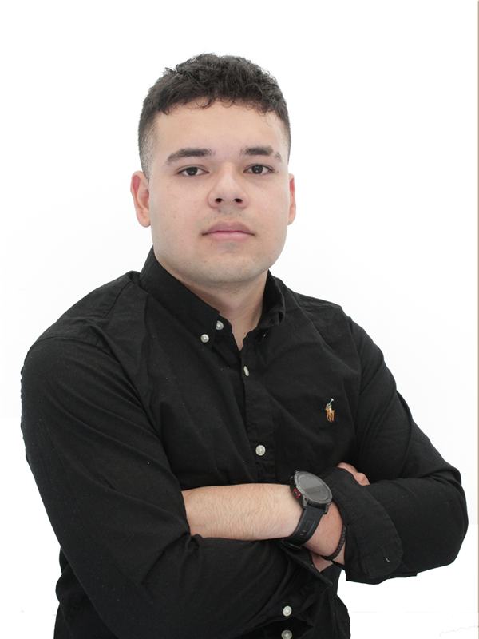

Santiago Acevedo
Muñoz
Desarrollador full stack junior
Construyo productos web con React, TypeScript, Python y FastAPI. También he trabajado en soluciones de inteligencia artificial con RAG y Qdrant.
Perfil
Sobre mí
Soy desarrollador de software y me interesa transformar ideas en productos funcionales. En proyectos colaborativos he integrado frontend, backend, bases de datos e inteligencia artificial: desde interfaces en React y APIs con FastAPI hasta soluciones con recuperación de información (RAG) y Qdrant. También he desarrollado funcionalidades para un sistema de gestión documental con carga de PDF, extracción de información y flujos de revisión y aprobación. Me gusta aprender continuamente, comunicarme con claridad y dejar soluciones que otras personas puedan entender y mantener.
Herramientas
Habilidades
Tecnologías y fortalezas que aplico en mi experiencia y proyectos.
Frontend
Construyo interfaces web y componentes para productos digitales.
Backend
Desarrollo servicios y APIs para aplicaciones web.
Recuperación de información
Integro modelos de lenguaje con búsqueda contextual para responder consultas.
Desarrollo y colaboración
Organizo el trabajo y mantengo el código bajo control de versiones.
Trabajo en equipo
Me adapto al trabajo colaborativo y al aprendizaje continuo, con atención al detalle y comunicación clara.
Trabajo seleccionado
Proyectos destacados
Conoce el propósito de cada proyecto, cómo contribuí y cómo se aplican sus APIs.
Biblia IA · Bible-Ai
Propósito Ayudar a encontrar pasajes por cita o tema para el estudio personal y en comunidad.
Lo que hice Estoy desarrollando una aplicación interactiva que busca citas exactas y recupera pasajes relacionados desde una muestra bíblica.
API y demo En local, una API en Python consulta los archivos JSON mediante la ruta /api/search. La demo pública de Vercel sirve una muestra estática y permite buscar, por ejemplo, “Juan 3:16” o “mundo”.
Estado actual La búsqueda está disponible; las respuestas generadas por IA y la memoria aún no están conectadas.
Ver demo en Vercel ↗Ver repositorio ↗DocsFlow
Problema La información de documentos PDF debe extraerse y pasar por revisión y aprobación.
Lo que hice Desarrollé funcionalidades de frontend y backend para cargar PDF, extraer información y administrar flujos según los roles de usuario.
API en uso FastAPI recibe y procesa la información documental, gestiona el flujo de revisión y aprobación por roles y trabaja con PostgreSQL para organizar los datos.
Resultado Un sistema para centralizar documentos y gestionar su revisión y aprobación.
Colaboración Proyecto realizado con un compañero.
Ver repositorio ↗Asistente comercial con RAG
Problema Responder preguntas sobre productos con información del catálogo y apoyar al usuario durante su proceso de compra.
Mi contribución Integré la recuperación de conocimiento para RAG y el chatbot de Telegram; también trabajé en rutas de usuarios, prompts del agente y mejoras del flujo conversacional de compra.
API en uso FastAPI expone servicios de chat, búsqueda RAG, autenticación y confirmación de compra. Qdrant recupera contexto del catálogo; OpenAI u Ollama genera respuestas y MySQL guarda datos y conversaciones.
Resultado El asistente responde con contexto de productos y acompaña la selección y confirmación de compras.
Colaboración Proyecto realizado en equipo de cinco personas.
Ver repositorio ↗Ver mis contribuciones ↗Trayectoria
Experiencia y formación
Julio–diciembre 2025
Contrato de aprendizaje · Solvo S.A.S.
Participé en proyectos con RAG sobre Qdrant, integración de APIs y frontends en React y TypeScript. Trabajé con FastAPI en backend y colaboré en el desarrollo de soluciones escalables.
2024–2025
Técnico Laboral en Desarrollo de Software
Campuslands
2022
Bachiller Académico
Colegio Selvalegre
Certificaciones
- Curso con Python: Desarrollo con IA · Santander, 2026
- MongoDB Core Concepts · MongoDB, 2026
- Fundamentos de Python 1 · Cisco Networking Academy, marzo de 2026
Idiomas
- Español Nativo
- Inglés B1
- Portugués C1
¿Hablamos?
Busco oportunidades como desarrollador de software en empresas de tecnología.